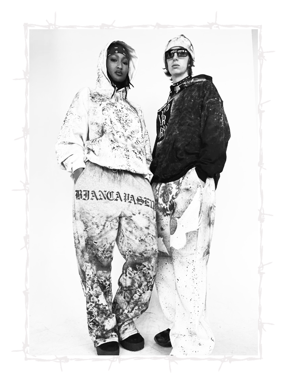

CLIENT BIAS
How might client bias (such as gender, ethnicity and body image) impact your work?
This for sure is a large part of my brand ethos, as far as body image and feeling comfortable in your clothes. I'm sure everyone's experienced a moment where you have a pair of pants that you love, but when you sit you can't feel comfortable in them, or something's too short or it's scratchy. I think that feeling very confident and comfortable within your clothing throughout the day is important. And as our bodies change throughout you know, our life, so using flexible materials and adjustable sizing.